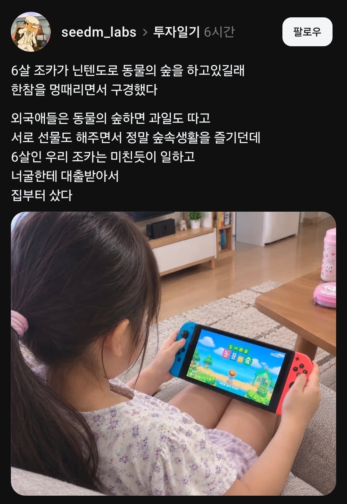

6살의 동숲 플레이
댓글
어쩔수없어 ㅎㅎ 인생은 실전이야
당장 나도 초딩때 무지성으로 집부터 키웠던 게 기억나네
왜 그렇게까지 집 크기 키우는데 집착했는지 모르겠음
다 늘린 뒤에는 ㄱㄵ게임하고 접음
뼛속까지 한국인이군..
한국인 = 부동산
그리고 빚 다 갚으면 현타와서 겜 때려침
근데 그게 목표인걸... ㅋㅋㅋ
알파이자 오메가죠
근데 빚 다 갚고 섬 꾸미는게 근본적인 게임인거 아니야? ㅋㅋ
화석 물고기 해산물 곤충채집 올컬렉 해야지
경제개발 5개년ㄷㄷㄷ
한국인답군
왜이리 AI짤 같지?
애 자세가 너무 다소곳 하고
플레이 화면도 아닌 부분에서 찍고
모어봐요 동물의 솦이고
오른쪽 조이콘 버튼이 x, x, x, s라고 되어있고
거치대에 조이콘 한개만 꼽혀있어서?
오 예리해
어릴때 동숲햇엇음
화석이 돈 제일 잘벌리는거 깨닫고 바로 화석 헌팅만 하고다님
그러다 닌텐도 날짜 바꾸먼 그만큼 시간 흐른다는 취약점을 발견해서 며칠씩 넘기면서 화석 스폰 뻥튀기 시키다가 호기심에 9999년으로 바꿧더니
집에 바퀴벌레도 9999년치 증식해서 하루종일 계속 튀어나오는 바퀴만 밟아죽엿었음
바퀴 효과적으로 죽이려고 집에 가구도 다 치우고 진짜 눈물낫엇음
존나 재밌게 했네 ㅋㅋㅋㅋㅋㅋㅋㅋㅋㅋ
ㅋㅋㅋㅋㅋㅋㅋㅋㄱㄱ
Ai
조기교육 ㄷㄷ
외국인들은 진짜로 한국인들이랑 다르게 플레이하나?
동물의솦 ㅇㅈㄹ ㅋㅋ ai 개주작 ㅂㅁ
외국애들도 똑같던데 뭔 개소린지;; 집 꾸미고 싶고 집 꾸미려면 집 넓혀야하니까 비싼 동물 잡을라고하고 걍 똑같이 플레이하더만 대신 집을 어떻게 꾸미는지 이런건 외국인이라서인지는 모르고 그냥 정리를 잘 안하더라 나는 각맞춰서 딱딱 진열하는데
이쁘노
믿고거르는스레드
ai 판명
6살이 만으로나 세는나이로나 저런 나름 시뮬레이션 게임을 이토록 전략적으로 하다니 영재인가?
각인된 유전자